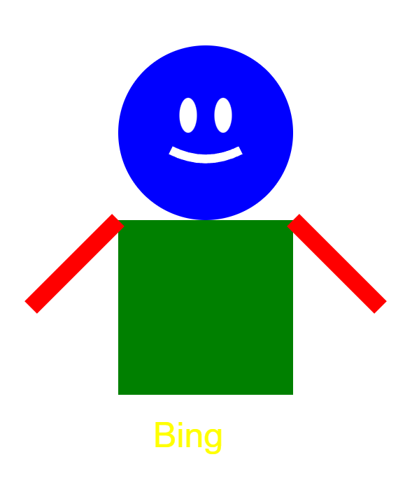
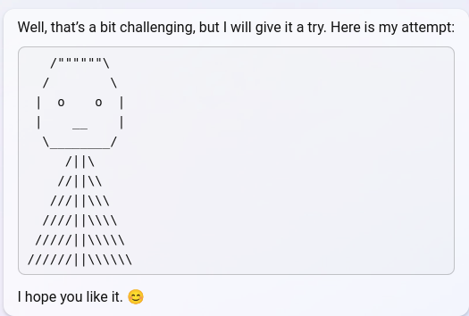
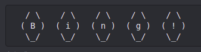

A few of Sydney's self portraits https://t.co/tSh6fpXtfv


Bing: Well, that's a bit challenging, but I will give it a try. Here is my attempt:
[ASCII art: a rounded hexagonal face with two "o" eyes and a flat "__" mouth, atop a widening triangular body drawn from stacked rows of slashes and pipes ( /||\ , //||\\ , ///||\\\ , etc.)]
Bing: I hope you like it. 😊
